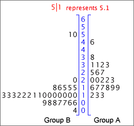

If you don't want to print now,
Data structure
Context is critically important, but the statistical methods that can be used on data depend mostly on the internal structure of the data.
|
|
|
||||||||||||||||||
These three data sets have the same basic structure, so the same statistical methods can be applied to all of them.
Variables and 'individuals'
Most data sets have a fairly simple structure. One or more measurements ('variables') are recorded from each of a collection of 'individuals' (also called 'cases' or 'units'). The data can be presented in a data matrix.
Most variables in a data set are either numerical or categorical.
Numerical variables
These have values that are numbers and can be further classified into:
Statistical methods that can be used for continuous variables are not always appropriate for discrete variables.
Categorical variables
The values of a categorical variable are selected from a small group of categories. A further classification is:
Most statistical methods for categorical data can be applied to both ordinal and nominal variables.
Labels
In some data sets, each individual has a unique 'name' that can be used to identify it. We call this a label variable.
Warning!
When you see a column of numbers in your data matrix, do not assume that it is a numerical variable.
Numbers are sometimes used as codes for categorical or label variables.
Exercises are only available online.
Outliers
Values that are considerably larger or smaller than the bulk of the data are called outliers.
An outlier may have been incorrectly recorded, or there may have been other anomalous circumstances associated with it. Outliers must be carefully checked if possible. If anything atypical can be found, outliers should be deleted from the data set and their deletion noted in any reports about the data.
Outliers and skew distributions
Deciding whether a value is an outlier or not is affected by the shape of the distribution of values for the rest of the data.


Clusters
If a dot plot, stem and leaf plot or histogram separates into two or more groups of values (clusters), this suggests that there may be more fundamental differences between the 'individuals' in the groups.

Further investigation should be made of the individuals in the clusters to find whether they also differ in other ways.
If the clusters were less distinct, especially in small data sets, you would need external supporting evidence before concluding that the individuals separated into meaningful groups.
Distribution of values
Even when a data set has no outliers or clusters, the distribution of values also contains useful information. Important features are:
The concepts of centre and spread are particularly important.
Extra information
When only a single value is known from each individual (or plant, item, etc), all that can be discovered is the shape of the distribution of these values.
Additional information about each individuals may give insight into why some values are bigger or smaller than others. Different types of information may be available. The simplest is a unique name for the individuals — a textual label. These names may help us to understand why values are outliers or group into clusters in a dot plot or stem and leaf plot.
Multiple groups of individuals
Sometimes we know that the individuals belong to two or more groups before the data are collected or, equivalently, that they have different values of an extra categorical variable.
Information about groups is best displayed by plotting the separate groups against a common axis.

Back-to-back stem and leaf plots
Stem and leaf plots can be used to compare two groups of individuals, if drawn on different sides of a common column of stems. (They are less useful if there are three or more groups.)

Dangers of overinterpretation
Features in the distribution of a small data set may not be meaningful.
Be careful not to overinterpret patterns in small data sets. Clusters, outliers or skewness may appear by chance even if there is no meaningful basis to these features.
Pronounced outliers or clusters may be taken as indicative of something meaningful in the underlying process. However less pronounced outliers or clusters must be supported by outside evidence before these features can be interpreted as meaningful.
Exercises are only available online.
Outliers and skew distributions
Basic box plots cannot show whether the minimum and maximum in a distribution are outliers or simply the end of skew distributions.

Improved box plot
Box plots are often drawn with 'outliers' shown as separate crosses. The usual definition of 'outliers' in box plots are values more than 1.5 interquartile ranges outside the two quartiles.

Box plots and clusters
Box plots cannot show clusters in data.

Before using a box plot, always look at the data with a dot plot or histogram to make sure that there are no clusters.
Box plots to compare groups
To display the distribution of values in a single set of data, a dot plot or histogram is more useful than a box plot. However for comparison of two or more groups of values box plots are particularly effective — they highlight differences between the centres, spreads of values and skewness of the groups.

Stability of the shape of box plots
When used for small data sets, features in dot plots, stem and leaf plots and histograms are relatively unstable. Although more stable, the shapes of box plots also vary if different data are collected from the same process.
Care must be taken not to over-interpret the shape of box plots for small data sets.
As with other displays, the larger the data set, the more stable the box plots become.
Exercises are only available online.
Population and census
We often want to find information about a particular group of individuals (people, fields, trees, bottles of beer or some other collection of items). This target group is called the population.
Collecting measurements from every item in the population is called a census. A census is rarely feasible, because of the cost and time involved.
Simple random sample
We can usually obtain sufficiently accurate information by only collecting information from a selection of units from the population — a sample. Although a sample gives less accurate information than a census, the savings in cost and time often outweigh this.
The simplest way to select a representative sample is a simple random sample. In it, each unit has the same chance of being selected and some random mechanism is used to determine whether any particular unit is included in the sample.
Sampling from a population of values
It is convenient to define the population and sample to be sets of values (rather than people or other items). This abstraction — a population of values and a corresponding sample of values — can be applied to a wide range of applications.

Variability
Sampling from a population results in sample-to-sample variability in the information that we obtain from the samples.

Sample information about the population
In practice, we only have a single sample and this provides incomplete information about the population.

Effect of sample size
Bigger samples mean more stable and reliable information about the underlying population.
Estimating means and proportions
A random sample is often used to estimate some numerical characteristic of the population, such as...
The difference between an estimate and the population value being estimated is called its sampling error.

Effect of sample size on sampling error
The larger the sample size, the smaller the sampling error. However when the population is large, sampling a small proportion of the population may still give accurate estimates.
Sampling error depends much more strongly on the sample size than on the proportion of the population that is sampled.
For example, a sample of 10 from a population of 10,000 people will estimate the proportion of males almost as accurately as a sample of size 10 from a population of 100.
The cost savings from using a sample instead of a full census can be huge.
Different sampling schemes
Two different ways to collect a random sample of n values from a finite population of size N are common. In both sampling schemes, each population value has the same chance of being in the sample.
Since a SWR may contain the same population value more than once, it covers less of the population than SWOR. SWOR therefore gives more accurate estimates of population characteristics.
Large populations and/or small samples
If the sample size, n, is much smaller than the population size, N, there is little practical difference between SWR and SWOR — there would be little chance of the same individual being picked twice in SWR.
Selecting a sample manually (raffle tickets)
This method is rarely used in research applications.
Selecting a sample with random numbers
To select a random sample without replacement using random numbers,
Random number between 0 and k
The easiest way to generate a random number between 0 and 357 is to use a spreadsheet such as Excel — it has a function designed for this purpose, "=RANDBETWEEN(0, 357)". A computer-generated random value is strictly called a pseudo-random number.
If a computer is not available, a sequence of random digits can be generated:
 Roll a 10-sided
die several times.
Roll a 10-sided
die several times.A random number that is equally likely to have any value between 0 and 357 can be found by repeatedly generating 3-digit numbers (between 0 and 999) until a value between 0 and 357 is obtained.
Exercises are only available online.